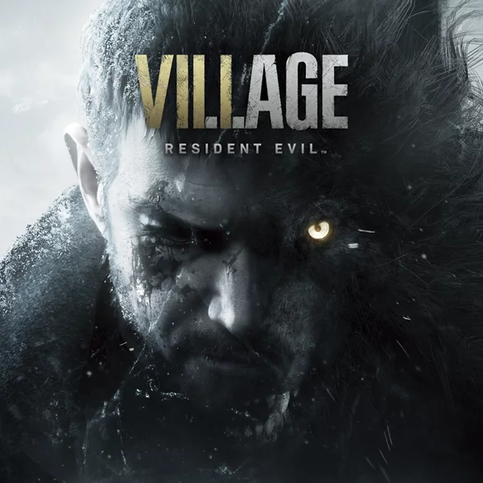
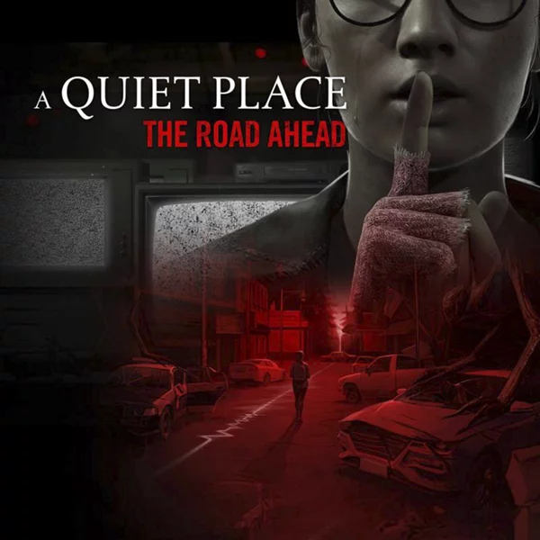
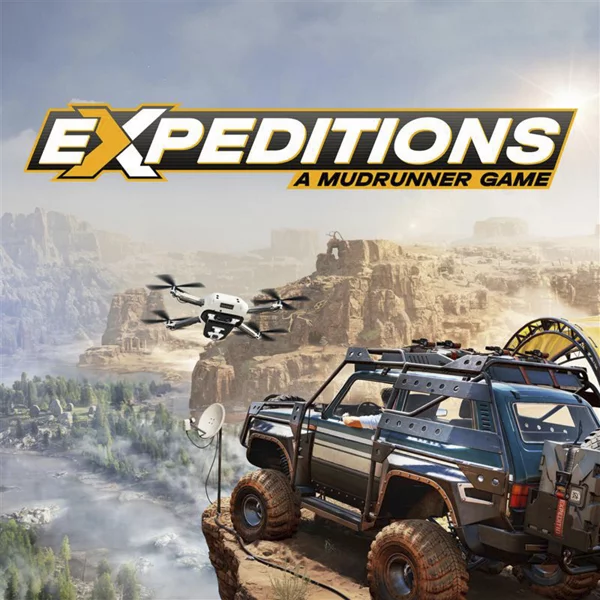
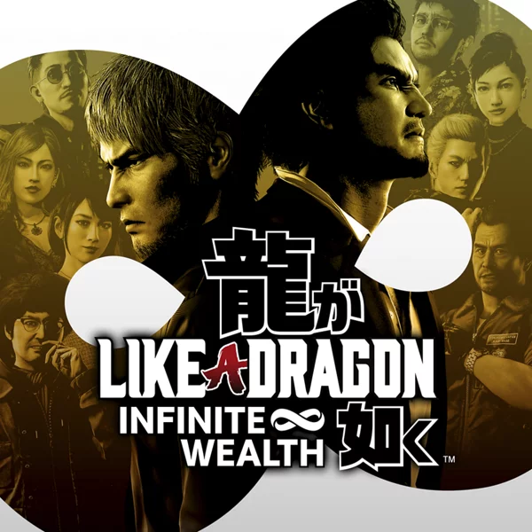
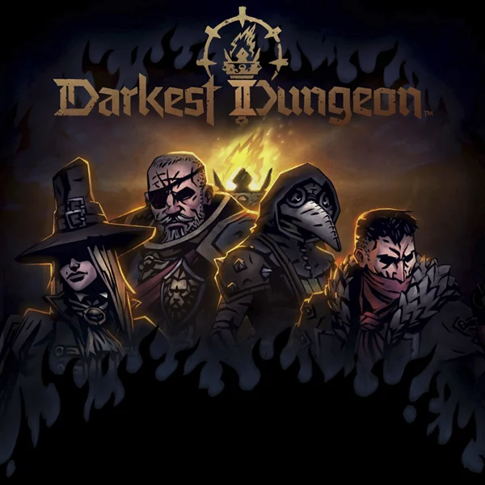
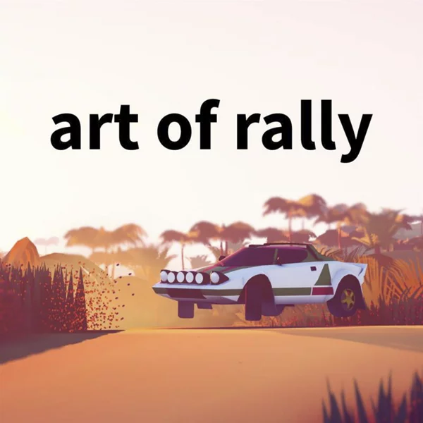
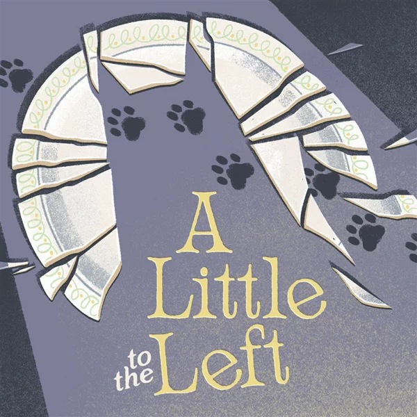

PS Plus Essential
Получите доступ к сотням игр, включая классические хиты, онлайн-мультиплеер и эксклюзивные скидки. Каждый месяц — новые игры бесплатно!
🎮 Игры месяца

Resident Evil Village
Хоррор от первого лица, продолжение RE7. Итан Уинтерс ищет похищенную дочь Розу в заснеженной румынской деревне, противостоя Матери Миранде и четырем лордам-мутантам (включая леди Димитреску).

A Quiet Place: The Road Ahead
Однопользовательский стелс-хоррор от первого лица, основанный на вселенной фильма «Тихое место». Сюжет рассказывает о студентке Алекс, пытающейся выжить в постапокалиптическом мире, кишащем слепыми монстрами с гиперчувствительным слухом.

Expeditions: A Mudrunner Game
Симулятор бездорожья, фокусирующийся на научных исследованиях, а не на доставке грузов. Игрокам предстоит управлять вездеходами в опасных локациях, использовать гаджеты (дроны, эхолоты) и строить базу для прохождения экспедиций.

Like a Dragon: Infinite Wealth
Масштабная JRPG и прямое продолжение Yakuza: Like a Dragon. Итибан Касуга отправляется на Гавайи, чтобы найти свою мать, объединяясь с легендарным Кадзумой Кирю.

Darkest Dungeon II
Пошаговая roguelike-RPG, где игроки ведут дилижанс через апокалиптический мир. Игра фокусируется на коротких напряженных заездах и управлении стрессом героев.

Art of Rally
Стилизованный инди-симулятор ралли, передающий атмосферу «золотой эры» автоспорта. Более 50 культовых автомобилей и честная физика управления.
